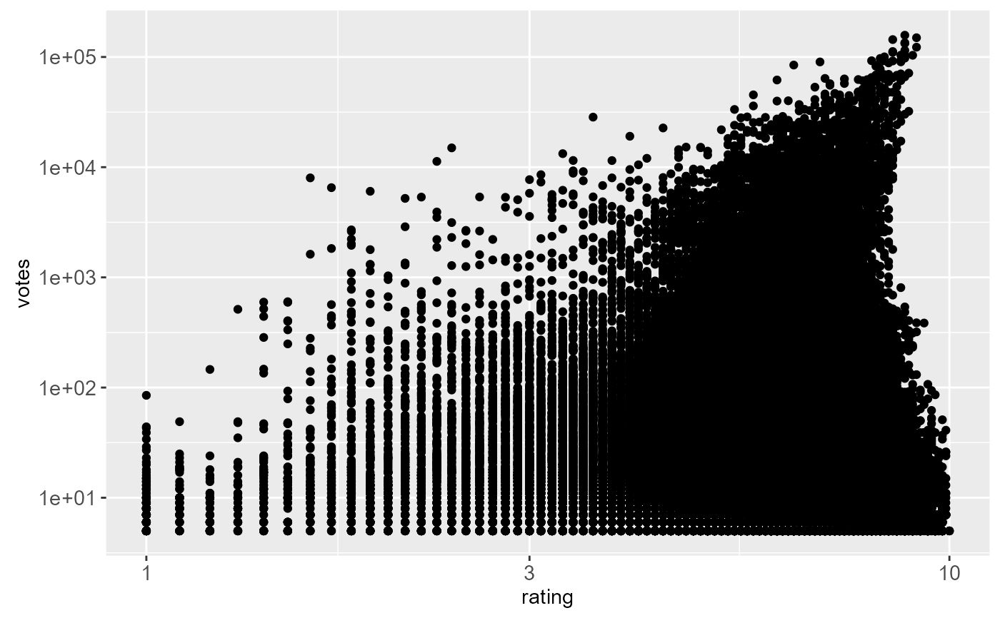

scale_x_continuous and scale_y_continuous are the key functions.
The others, scale_x_log10, scale_y_sqrt etc, are aliases
that set the trans argument to commonly used transformations.
Usage
scale_x_continuous(
name = waiver(),
breaks = waiver(),
minor_breaks = waiver(),
labels = waiver(),
limits = NULL,
expand = waiver(),
oob = censor,
na.value = NA_real_,
trans = "identity"
)
scale_y_continuous(
name = waiver(),
breaks = waiver(),
minor_breaks = waiver(),
labels = waiver(),
limits = NULL,
expand = waiver(),
oob = censor,
na.value = NA_real_,
trans = "identity"
)
scale_x_log10(...)
scale_y_log10(...)
scale_x_reverse(...)
scale_y_reverse(...)
scale_x_sqrt(...)
scale_y_sqrt(...)Arguments
- name
The name of the scale. Used as axis or legend title. If
NULL, the default, the name of the scale is taken from the first mapping used for that aesthetic.- breaks
One of:
NULLfor no breakswaiver()for the default breaks computed by the transformation objectA numeric vector of positions
A function that takes the limits as input and returns breaks as output
- minor_breaks
One of:
NULLfor no minor breakswaiver()for the default breaks (one minor break between each major break)A numeric vector of positions
A function that given the limits returns a vector of minor breaks.
- labels
One of:
NULLfor no labelswaiver()for the default labels computed by the transformation objectA character vector giving labels (must be same length as
breaks)A function that takes the breaks as input and returns labels as output
- limits
A numeric vector of length two providing limits of the scale. Use
NAto refer to the existing minimum or maximum.- expand
A numeric vector of length two giving multiplicative and additive expansion constants. These constants ensure that the data is placed some distance away from the axes. The defaults are
c(0.05, 0)for continuous variables, andc(0, 0.6)for discrete variables.- oob
Function that handles limits outside of the scale limits (out of bounds). The default replaces out of bounds values with NA.
- na.value
Missing values will be replaced with this value.
- trans
Either the name of a transformation object, or the object itself. Built-in transformations include "asn", "atanh", "boxcox", "exp", "identity", "log", "log10", "log1p", "log2", "logit", "probability", "probit", "reciprocal", "reverse" and "sqrt".
A transformation object bundles together a transform, it's inverse, and methods for generating breaks and labels. Transformation objects are defined in the scales package, and are called
name_trans, e.g.boxcox_trans. You can create your own transformation withtrans_new.- ...
Other arguments passed on to
scale_(x|y)_continuous
See also
scale_date for date/time position scales.
Examples
# \donttest{
if (require(ggplot2movies)) {
m <- ggplot(subset(movies, votes > 1000), aes(rating, votes)) +
geom_point(na.rm = TRUE)
m
# Manipulating the default position scales lets you:
# * change the axis labels
m + scale_y_continuous("number of votes")
m + scale_y_continuous(quote(votes ^ alpha))
# * modify the axis limits
m + scale_y_continuous(limits = c(0, 5000))
m + scale_y_continuous(limits = c(1000, 10000))
m + scale_x_continuous(limits = c(7, 8))
# you can also use the short hand functions xlim and ylim
m + ylim(0, 5000)
m + ylim(1000, 10000)
m + xlim(7, 8)
# * choose where the ticks appear
m + scale_x_continuous(breaks = 1:10)
m + scale_x_continuous(breaks = c(1,3,7,9))
# * manually label the ticks
m + scale_x_continuous(breaks = c(2,5,8), labels = c("two", "five", "eight"))
m + scale_x_continuous(breaks = c(2,5,8), labels = c("horrible", "ok", "awesome"))
m + scale_x_continuous(breaks = c(2,5,8), labels = expression(Alpha, Beta, Omega))
# There are a few built in transformation that you can use:
m + scale_y_log10()
m + scale_y_sqrt()
m + scale_y_reverse()
# You can also create your own and supply them to the trans argument.
# See ?scales::trans_new
# You can control the formatting of the labels with the formatter
# argument. Some common formats are built into the scales package:
df <- data.frame(
x = rnorm(10) * 100000,
y = seq(0, 1, length.out = 10)
)
p <- ggplot(df, aes(x, y)) + geom_point()
p + scale_y_continuous(labels = scales::percent)
p + scale_y_continuous(labels = scales::dollar)
p + scale_x_continuous(labels = scales::comma)
# Other shortcut functions
ggplot(movies, aes(rating, votes)) +
geom_point() +
ylim(1e4, 5e4)
# * axis labels
ggplot(movies, aes(rating, votes)) +
geom_point() +
labs(x = "My x axis", y = "My y axis")
# * log scaling
ggplot(movies, aes(rating, votes)) +
geom_point() +
scale_x_log10() +
scale_y_log10()
}

# }